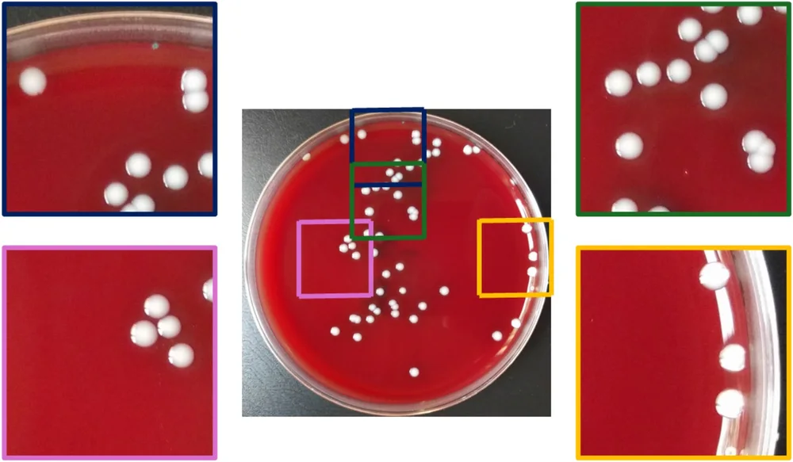
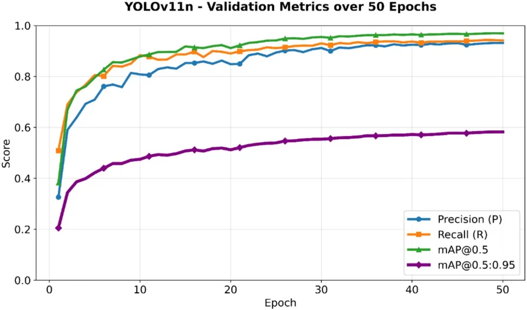
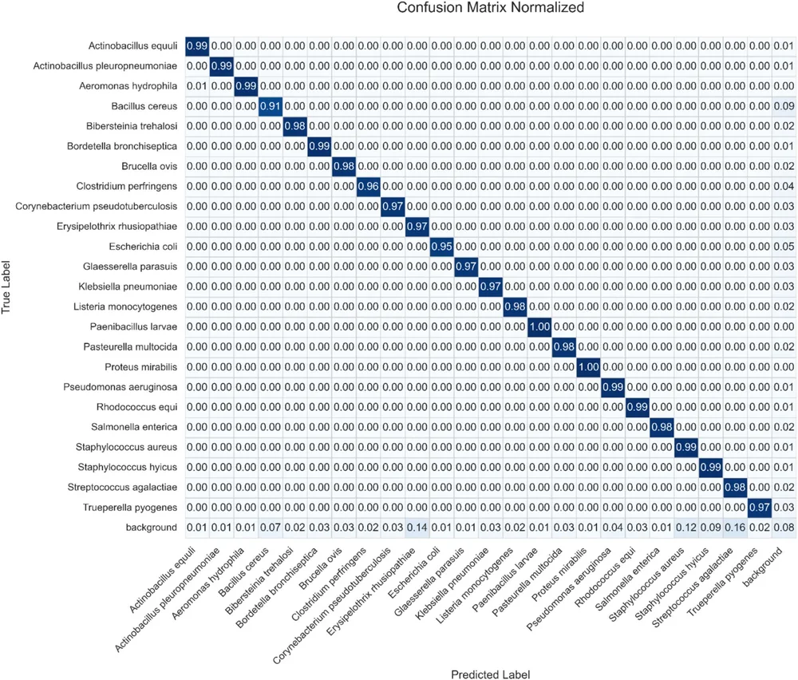
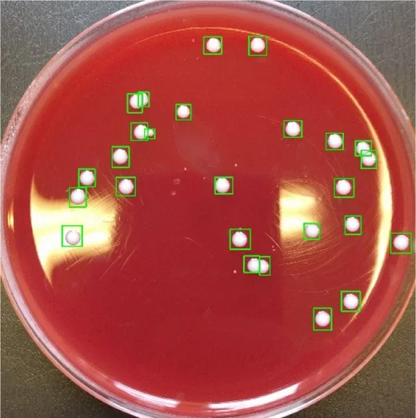
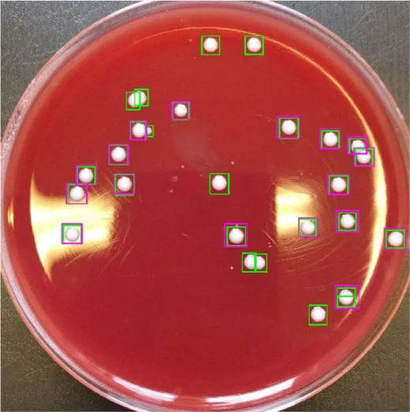
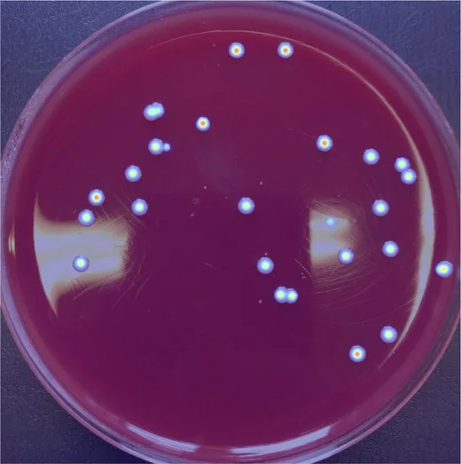

Shrinking a high-resolution Petri dish photo to 640 × 640 px erases small colonies. This study keeps the native resolution by training on overlapping tiles and counting with SAHI tiled inference, using only nano YOLO models.
Best mAP@0.596.9%YOLOv11n, tiled
Resized → tiled+29 to +52percentage points mAP@0.5
Model size2.6 Mparameters
Whole plate< 320 mslaptop RTX 3050
Strategy beats architecture
The jump comes from keeping pixels, not from a bigger or newer model.
Lightweight
No heavy backbone, multi-scale training, test-time augmentation or ensembles.
Why Count Colonies Automatically, and Why It Is Hard
Clinical and veterinary microbiology labs face growing sample volumes, multidrug-resistant pathogens and pressure for fast diagnosis. Manual colony counting is slow, tiring and subjective.
Deep learning can read plates, but small, densely packed colonies are the weak point:
Detectors expect about 640 × 640 px input.
A full-plate photo is several thousand pixels wide.
Downscaling shrinks each colony to a few pixels and merges neighbours.
Slicing frameworks
SAHI, ASAHI, DAHI and S3AHI slice images into overlapping patches at inference time and raise AP for tiny objects without changing the detector.
Gap: tiling had not been evaluated systematically on lightweight nano models for bacterial colonies under real laboratory variability.
1 · Introduction
Three Contributions
1 · Tiling beats resizing and model upgrades
Fixed-size tiled inference with moderate overlap clearly outperforms conventional resizing and recent YOLO improvements when small, dense objects limit performance.
2 · Nano models are enough
YOLOv11n with only 2.6 M parameters reaches high accuracy on consumer-grade hardware with sub-second whole-plate inference.
3 · A reproducible, lightweight pipeline
No heavy backbones, multi-scale training, test-time augmentation or ensembling; code is public on GitHub.
2 · Materials and Methods
A Realistic 24-Species Colony Dataset
Public dataset by Makrai et al. (Scientific Data), veterinary bacteria.
369 Petri dish images, 24 species (11 Gram-positive, 13 Gram-negative).
56,865 colonies boxed by two PhD bacteriologists.
Three smartphones (LG Nexus 5X, iPhone 6, Huawei P30 Lite), no fixed lighting or positioning.
Blood, chocolate, nutrient and MacConkey agar; black or white backgrounds; reflections and condensation.
Colonies per plate< 10 → > 1,100very uneven density
Densest speciesS. aureus, S. agalactiae, S. hyicus
The deliberate lack of standardization makes this a test of real laboratory conditions rather than a controlled imaging setup.
2 · Materials and Methods · Table 1
369 Plates Become 9,220 Tiles
ShowHover a species for the plate count.
2 · Materials and Methods · Fig. 1
Tiling: Keep the Pixels, Cut the Plate

640 × 640, 20% overlap
Stride = 640 × (1 − 0.2) = 512 px in both directions.
Keep tiles with colonies
A box belongs to a tile if its centre falls inside; empty tiles are dropped.
No leakage
Split by plate: 64% train, 16% validation, 20% independent test.
2 · Materials and Methods · Interactive
Tiling Calculator: Resize or Slice?
Plate width
Overlap
Colony size
Plate width and colony size are assumptions for illustration (the dataset's smartphone photos vary). Blue and yellow: two neighbouring tiles; the shaded strip is the area they share. On the real data, 9,220 kept tiles / 369 plates ≈ 25 tiles per plate.
SAHI was chosen over ASAHI, DAHI or S3AHI because it is simple, reproducible and detector-independent: the goal was to isolate the effect of resolution preservation, not to add adaptive slicing.
2 · Materials and Methods
Three Nano Models, Two Strategies
YOLOv5n, YOLOv8n, YOLOv11n: three successive YOLO generations, all nano-scale.
Larger variants were left out on purpose: the question is resolution, not model scaling.
Resized: whole plate → 640 × 640 for training and testing.
Tiled: train on 9,220 tiles, test with SAHI slicing + NMS.
Framework
Ultralytics 8.3.213
GPU
RTX 3050 Laptop, 6 GB
Init
ImageNet-pretrained, 80 → 24 classes
Epochs / input
50 / 640 × 640
Batch
auto, 4–8
Optimizer
auto: SGD (v5n), AdamW (v8n, v11n)
LR
cosine, lr0 = 0.01
Not used
TTA, ensembles, TensorRT, INT8
Each model used the same optimizer for both strategies, and v8n and v11n share AdamW yet behave alike, so the gap is attributed to tiling, not to the optimizer.
3 · Results · Table 2
Resized vs Tiled: the Central Result
Metricresized to 640tiled + SAHI
mAP@0.5 rises from 44.9–66.3% to 95.4–96.9% (+29 to +52 pp) and mAP@0.5:0.95 more than doubles. The spread between YOLO generations shrinks from 21 pp to 1.5 pp once resolution is preserved.
3 · Results · Table 3
What Tiling Costs
Measureresizedtiled + SAHI
Training ≈ 4×
About 25× more training images, yet only about 4× more time.
Inference < 0.32 s
285–312 ms per whole plate: fine for routine lab use.
Same model
Layers, parameters and GFLOPs are unchanged (v11n: 181 layers, 2.6 M, 6.5 GFLOPs).
3 · Results · Fig. 2
YOLOv11n Training Curves (Tiled)

Fast rise in the first 15 epochs; P, R and mAP@0.5 reach about 0.93, 0.94 and 0.97 by epoch 50.
mAP@0.5:0.95 climbs steadily from 0.21 to 0.582 without a plateau: more epochs could help further.
Precision and recall nearly overlap at the end: a balanced detector.
3 · Results · Fig. 3
Class-Level Behaviour: Confusion Matrix

Diagonal > 0.9523 / 24classes
Diagonal ≥ 0.9815 / 24classes
Inter-class confusions almost all below 0.01.
Remaining errors are mainly class ↔ background; the highest is 0.16 for Streptococcus agalactiae.
Minor differences partly reflect class imbalance.
YOLOv11n, tiled, computed on the validation set for model analysis; final metrics come from the test set.
3 · Results · Fig. 4
A Dense Plate: 26 Small Colonies

Ground truth

3 · Results · Fig. 5
Where the Model Looks: Detection Density

tiledresized
Drag the divider. Each YOLOv11n detection adds a Gaussian (σ ≈ 101 px) at its box centre: warm colours mean dense, confident detections.
With tiling, activations sit on the colony centres and ignore reflections, condensation and agar irregularities.
This dense, well-placed activation pattern explains why missed detections and misclassifications disappear with tiled inference.
3 · Results · Table 5
How Much Overlap Is Enough?
Metric
YOLOv11n, 640 × 640 slices. Within 10–25% the effect is small: going from 20% to 25% adds only 0.002 mAP@0.5:0.95 but more tiles, duplicates and NMS work. 20% (orange) is the balanced choice.
3 · Results · Table 6
Fivefold Cross-Validation (YOLOv11n)
resizedtiled
Resized0.663 ± 0.009mean mAP@0.5
Tiled0.967 ± 0.004mean mAP@0.5
Folds won by tiling5 / 5split by plate, no leakage
3 · Results · Table 4
Comparison with Prior Colony Detectors
prior work, 5-class datasetprior work, same 24-class datasetproposed (tiled)
Earlier methods use 0.62–304 M parameters; the proposed nano models stay at 2.5–3 M and reach the highest mAP@0.5. Values for prior work are taken from their papers, with different datasets, splits and protocols: a reference, not a head-to-head test.
3 · Results · Table 4
Table 4 in Full (click a header to sort)
Method
Classes
Params (M)
GFLOPs
mAP@0.5
mAP@0.5:0.95
Faster R-CNN + ResNet-50
5
41.8
–
0.865
0.56
Faster R-CNN + ResNet-101
5
60.8
–
0.876
0.573
Faster R-CNN + ResNeXt-101
5
79.2
–
0.874
0.574
Faster R-CNN + HRNet
5
87.5
–
0.882
0.576
Cascade R-CNN + ResNet-50
5
45.3
–
0.886
0.584
Cascade R-CNN + ResNet-101
5
64.3
–
0.892
0.590
Cascade R-CNN + ResNeXt-101
5
83.0
–
0.887
0.587
Cascade R-CNN + HRNet
5
94.2
–
0.891
0.594
InceptionResNetV2
5
55.9
12.98
0.884
–
SE-ResNeXt50
5
27.6
4.25
0.890
–
ViT-L/16
5
304.3
190.7
0.896
–
EfficientNetB6
5
43
10.34
0.902
–
AutoML
5
1.8
1.5
0.910
–
YOLOv8 (original)
24
3.01
8.1
0.913
–
MobileNet
24
8.72
22.5
0.884
–
ShuffleNet
24
6.38
16.4
0.846
–
FasterNet
24
4.17
10.7
0.867
–
StarNet
24
2.22
6.5
0.914
–
ResNet-50
24
23.56
–
0.76
–
MobileNet v2
24
2.25
–
0.82
–
Inception
24
21.83
–
0.79
–
AlexNet
24
57.1
–
0.61
–
THP-CNN
24
0.62
–
0.85
–
Proposed (YOLOv5n)
24
2.5
7.2
0.954
0.554
Proposed (YOLOv8n)
24
3
8.2
0.968
0.584
Proposed (YOLOv11n)
24
2.6
6.5
0.969
0.582
4 · Discussion
Discussion, Errors and Limitations
Resolution is the key factor
The gain comes from the preprocessing and inference strategy, not from differences between YOLO versions.
Remaining errors
Duplicates at tile borders, strong edge reflections and very crowded regions: limits of post-processing and image capture, not of model capacity.
Limitations
One public dataset; bounding boxes, not colony outlines; overlap adds compute and may need tuning for low-power devices.
Beyond microbiology
Useful wherever objects are small, dense and high-resolution, but other devices, media and lighting need separate validation.
5 · Conclusion
Conclusion and Future Work
Downscaling to 640 × 640 cripples nano YOLO models on dense plates (mAP@0.5 44.9–66.3%).
Tiling with 20% overlap + NMS restores native resolution: YOLOv11n 96.9% mAP@0.5, 58.2% mAP@0.5:0.95 across 24 species.
Inter-class errors below 1% in most classes; missed detections become negligible even on plates with over 1,100 colonies.
Under 320 ms per plate on a laptop GPU, no special imaging hardware: ready for routine labs.
Next steps
Adaptive tile sizes and dynamic overlap to cut border duplicates
Segmentation models (YOLO-seg) for colony outlines and touching colonies
External validation with other laboratories, devices and culture conditions
5 · Conclusion
Check Questions
A 3,000 px plate is resized to 640 px. What happens to a 40 px colony?
Why are tiles assigned to train, validation and test by their original plate?
Why does the stride equal 640 × (1 − overlap), and what is it at 20%?
Training takes about 4× longer with tiles although there are about 25× more images. Why is that acceptable?
Why can't Table 4 be read as a strict ranking of methods?
Show answers
It shrinks by 640 / 3000 to about 8.5 px, while inside a 640 px tile it keeps its full 40 px.
Overlapping tiles of the same plate are nearly identical; mixing them across subsets would leak test information.
Neighbouring tiles share an overlap strip, so each step moves by the non-shared part: 640 × 0.8 = 512 px.
Training is a one-off cost; inference stays under 0.32 s per plate, and accuracy rises by up to 52 pp.
Prior results come from other papers with different datasets (5 vs 24 classes), splits and protocols.
References
Selected References
Makrai, L. et al. Annotated dataset for deep-learning-based bacterial colony detection. Sci. Data 10, 497 (2023); data: doi:10.6084/m9.figshare.22022540.v3.
Majchrowska, S. et al. Assessing microbial colony counting: A deep learning approach with the AGAR image dataset. Neurocomputing 630, 129654 (2025).
Ding, T., Tang, Y.-W. & Hao, X. Application of artificial intelligence in clinical microbiology: From research to practice. iLABMED 3(4), 405–416 (2025).
Nagro, S. A. A systematic literature review of deep learning-based detection and classification methods for bacterial colonies. IJACSA 13(10), 185–202 (2022).
Akyon, F. C., Altinuc, S. O. & Temizel, A. Slicing aided hyper inference and fine-tuning for small object detection. IEEE ICIP, 966–970 (2022).
Overcoming Resolution Constraints in Automated Colony Counting via a High-Performance Deep Learning Framework Using SAHI
How to cite: Külcü, S., & Balpetek Külcü, D. (2026). Overcoming resolution constraints in automated colony counting via a high-performance deep learning framework using SAHI. Scientific Reports, 16, 24516. doi:10.1038/s41598-026-55724-1